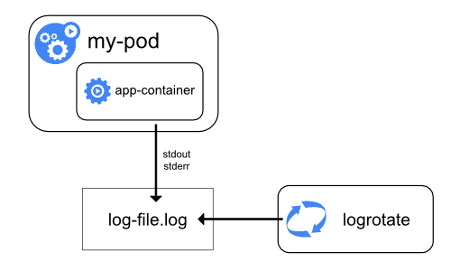
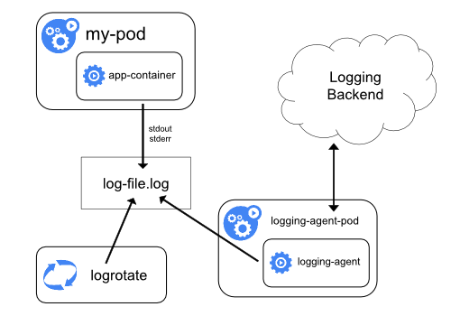
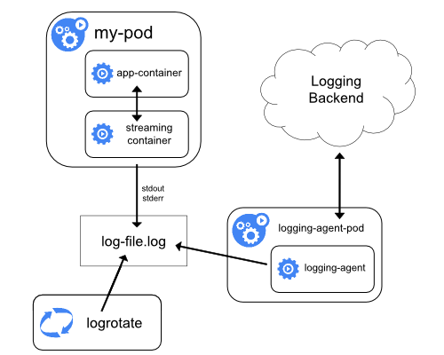
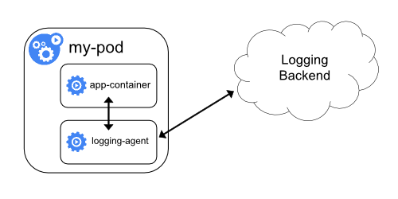
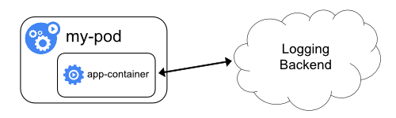

Application logs can help you understand what is happening inside your application. The logs are particularly useful for debugging problems and monitoring cluster activity. Most modern applications have some kind of logging mechanism. Likewise, container engines are designed to support logging. The easiest and most adopted logging method for containerized applications is writing to standard output and standard error streams.
However, the native functionality provided by a container engine or runtime is usually not enough for a complete logging solution.
For example, you may want to access your application's logs if a container crashes, a pod gets evicted, or a node dies.
In a cluster, logs should have a separate storage and lifecycle independent of nodes, pods, or containers. This concept is called cluster-level logging.
Cluster-level logging architectures require a separate backend to store, analyze, and query logs. Kubernetes does not provide a native storage solution for log data. Instead, there are many logging solutions that integrate with Kubernetes. The following sections describe how to handle and store logs on nodes.
Pod and container logs
Kubernetes captures logs from each container in a running Pod.
This example uses a manifest for a Pod with a container
that writes text to the standard output stream, once per second.
debug/counter-pod.yaml
apiVersion: v1
kind: Pod
metadata:
name: counter
spec:
containers:
- name: count
image: busybox:1.28
args: [/bin/sh, -c,
'i=0; while true; do echo "$i: $(date)"; i=$((i+1)); sleep 1; done']To run this pod, use the following command:
kubectl apply -f https://k8s.io/examples/debug/counter-pod.yamlThe output is:
pod/counter createdTo fetch the logs, use the kubectl logs command, as
follows:
kubectl logs counterThe output is similar to:
0: Fri Apr 1 11:42:23 UTC 2022
1: Fri Apr 1 11:42:24 UTC 2022
2: Fri Apr 1 11:42:25 UTC 2022You can use kubectl logs --previous to retrieve logs
from a previous instantiation of a container. If your pod has multiple
containers, specify which container's logs you want to access by
appending a container name to the command, with a -c flag,
like so:
kubectl logs counter -c countContainer log streams
Feature state:
Alpha since Kubernetes v1.32; disabled by default
(PodLogsQuerySplitStreams)
As an alpha feature, the kubelet can split out the logs from the two
standard streams produced by a container: standard
output and standard
error. To use this behavior, you must enable the
PodLogsQuerySplitStreams feature
gate. With that feature gate enabled, Kubernetes 1.37 allows access
to these log streams directly via the Pod API. You can fetch a specific
stream by specifying the stream name (either Stdout or
Stderr), using the stream query string. You
must have access to read the log subresource of that
Pod.
To demonstrate this feature, you can create a Pod that periodically writes text to both the standard output and error stream.
debug/counter-pod-err.yaml
apiVersion: v1
kind: Pod
metadata:
name: counter-err
spec:
containers:
- name: count
image: busybox:1.28
args: [/bin/sh, -c,
'i=0; while true; do echo "$i: $(date)"; echo "$i: err" >&2 ; i=$((i+1)); sleep 1; done']To run this pod, use the following command:
kubectl apply -f https://k8s.io/examples/debug/counter-pod-err.yamlTo fetch only the stderr log stream, you can run:
kubectl get --raw "/api/v1/namespaces/default/pods/counter-err/log?stream=Stderr"See the kubectl logs
documentation for more details.
How nodes handle container logs

A container runtime handles and redirects any output generated to a
containerized application's stdout and stderr
streams. Different container runtimes implement this in different ways;
however, the integration with the kubelet is standardized as the CRI
logging format.
By default, if a container restarts, the kubelet keeps one terminated container with its logs. If a pod is evicted from the node, all corresponding containers are also evicted, along with their logs.
The kubelet makes logs available to clients via a special feature of
the Kubernetes API. The usual way to access this is by running
kubectl logs.
Log rotation
Feature state:
Stable since Kubernetes v1.21
The kubelet is responsible for rotating container logs and managing the logging directory structure. The kubelet sends this information to the container runtime (using CRI), and the runtime writes the container logs to the given location.
You can configure two kubelet configuration
settings, containerLogMaxSize (default 10Mi) and
containerLogMaxFiles (default 5), using the kubelet
configuration file. These settings let you configure the maximum
size for each log file and the maximum number of files allowed for each
container respectively.
In order to perform an efficient log rotation in clusters where the
volume of the logs generated by the workload is large, kubelet also
provides a mechanism to tune how the logs are rotated in terms of how
many concurrent log rotations can be performed and the interval at which
the logs are monitored and rotated as required. You can configure two
kubelet configuration
settings, containerLogMaxWorkers and
containerLogMonitorInterval using the kubelet
configuration file.
When you run kubectl logs
as in the basic logging example, the kubelet on the node handles the
request and reads directly from the log file. The kubelet returns the
content of the log file.
Note:
Only the contents of the latest log file are available through
kubectl logs.
For example, if a Pod writes 40 MiB of logs and the kubelet rotates
logs after 10 MiB, running kubectl logs returns at most
10MiB of data.
System component logs
There are two types of system components: those that typically run in a container, and those components directly involved in running containers. For example:
- The kubelet and container runtime do not run in containers. The kubelet runs your containers (grouped together in pods)
- The Kubernetes scheduler, controller manager, and API server run
within pods (usually static Pods). The etcd component runs in
the control plane, and most commonly also as a static pod. If your
cluster uses kube-proxy, you typically run this as a
DaemonSet.
Log locations
The way that the kubelet and container runtime write logs depends on the operating system that the node uses:
Linux
On Linux nodes that use systemd, the kubelet and container runtime
write to journald by default. You use journalctl to read
the systemd journal; for example:
journalctl -u kubelet.
If systemd is not present, the kubelet and container runtime write to
.log files in the /var/log directory. If you
want to have logs written elsewhere, you can indirectly run the kubelet
via a helper tool, kube-log-runner, and use that tool to
redirect kubelet logs to a directory that you choose.
By default, kubelet directs your container runtime to write logs into
directories within /var/log/pods.
For more information on kube-log-runner, read System
Logs.
Windows
By default, the kubelet writes logs to files within the directory
C:\var\logs (notice that this is not
C:\var\log).
Although C:\var\log is the Kubernetes default location
for these logs, several cluster deployment tools set up Windows nodes to
log to C:\var\log\kubelet instead.
If you want to have logs written elsewhere, you can indirectly run
the kubelet via a helper tool, kube-log-runner, and use
that tool to redirect kubelet logs to a directory that you choose.
However, by default, kubelet directs your container runtime to write
logs within the directory C:\var\log\pods.
For more information on kube-log-runner, read System
Logs.
For Kubernetes cluster components that run in pods, these write to
files inside the /var/log directory, bypassing the default
logging mechanism (the components do not write to the systemd journal).
You can use Kubernetes' storage mechanisms to map persistent storage
into the container that runs the component.
Kubelet allows changing the pod logs directory from default
/var/log/pods to a custom path. This adjustment can be made
by configuring the podLogsDir parameter in the kubelet's
configuration file.
Caution:
It's important to note that the default location
/var/log/pods has been in use for an extended period and
certain processes might implicitly assume this path. Therefore, altering
this parameter must be approached with caution and at your own risk.
Another caveat to keep in mind is that the kubelet supports the
location being on the same disk as /var. Otherwise, if the
logs are on a separate filesystem from /var, then the
kubelet will not track that filesystem's usage, potentially leading to
issues if it fills up.
For details about etcd and its logs, view the etcd documentation. Again, you can use Kubernetes' storage mechanisms to map persistent storage into the container that runs the component.
Note:
If you deploy Kubernetes cluster components (such as the scheduler) to log to a volume shared from the parent node, you need to consider and ensure that those logs are rotated. Kubernetes does not manage that log rotation.
Your operating system may automatically implement some log rotation -
for example, if you share the directory /var/log into a
static Pod for a component, node-level log rotation treats a file in
that directory the same as a file written by any component outside
Kubernetes.
Some deploy tools account for that log rotation and automate it; others leave this as your responsibility.
Cluster-level logging architectures
While Kubernetes does not provide a native solution for cluster-level logging, there are several common approaches you can consider. Here are some options:
- Use a node-level logging agent that runs on every node.
- Include a dedicated sidecar container for logging in an application pod.
- Push logs directly to a backend from within an application.
Using a node logging agent

You can implement cluster-level logging by including a node-level logging agent on each node. The logging agent is a dedicated tool that exposes logs or pushes logs to a backend. Commonly, the logging agent is a container that has access to a directory with log files from all of the application containers on that node.
Because the logging agent must run on every node, it is recommended
to run the agent as a DaemonSet.
Node-level logging creates only one agent per node and doesn't require any changes to the applications running on the node.
Containers write to stdout and stderr, but with no agreed format. A node-level agent collects these logs and forwards them for aggregation.
Using a sidecar container with the logging agent
You can use a sidecar container in one of the following ways:
- The sidecar container streams application logs to its own
stdout. - The sidecar container runs a logging agent, which is configured to pick up logs from an application container.
Streaming sidecar container

By having your sidecar containers write to their own
stdout and stderr streams, you can take
advantage of the kubelet and the logging agent that already run on each
node. The sidecar containers read logs from a file, a socket, or
journald. Each sidecar container prints a log to its own
stdout or stderr stream.
This approach allows you to separate several log streams from
different parts of your application, some of which can lack support for
writing to stdout or stderr. The logic behind
redirecting logs is minimal, so it's not a significant overhead.
Additionally, because stdout and stderr are
handled by the kubelet, you can use built-in tools like
kubectl logs.
For example, a pod runs a single container, and the container writes to two different log files using two different formats. Here's a manifest for the Pod:
admin/logging/two-files-counter-pod.yaml
apiVersion: v1
kind: Pod
metadata:
name: counter
spec:
containers:
- name: count
image: busybox:1.28
args:
- /bin/sh
- -c
- >
i=0;
while true;
do
echo "$i: $(date)" >> /var/log/1.log;
echo "$(date) INFO $i" >> /var/log/2.log;
i=$((i+1));
sleep 1;
done
volumeMounts:
- name: varlog
mountPath: /var/log
volumes:
- name: varlog
emptyDir: {}It is not recommended to write log entries with different formats to
the same log stream, even if you managed to redirect both components to
the stdout stream of the container. Instead, you can create
two sidecar containers. Each sidecar container could tail a particular
log file from a shared volume and then redirect the logs to its own
stdout stream.
Here's a manifest for a pod that has two sidecar containers:
admin/logging/two-files-counter-pod-streaming-sidecar.yaml
apiVersion: v1
kind: Pod
metadata:
name: counter
spec:
containers:
- name: count
image: busybox:1.28
args:
- /bin/sh
- -c
- >
i=0;
while true;
do
echo "$i: $(date)" >> /var/log/1.log;
echo "$(date) INFO $i" >> /var/log/2.log;
i=$((i+1));
sleep 1;
done
volumeMounts:
- name: varlog
mountPath: /var/log
- name: count-log-1
image: busybox:1.28
args: [/bin/sh, -c, 'tail -n+1 -F /var/log/1.log']
volumeMounts:
- name: varlog
mountPath: /var/log
- name: count-log-2
image: busybox:1.28
args: [/bin/sh, -c, 'tail -n+1 -F /var/log/2.log']
volumeMounts:
- name: varlog
mountPath: /var/log
volumes:
- name: varlog
emptyDir: {}Now when you run this pod, you can access each log stream separately by running the following commands:
kubectl logs counter count-log-1The output is similar to:
0: Fri Apr 1 11:42:26 UTC 2022
1: Fri Apr 1 11:42:27 UTC 2022
2: Fri Apr 1 11:42:28 UTC 2022
...kubectl logs counter count-log-2The output is similar to:
Fri Apr 1 11:42:29 UTC 2022 INFO 0
Fri Apr 1 11:42:30 UTC 2022 INFO 0
Fri Apr 1 11:42:31 UTC 2022 INFO 0
...If you installed a node-level agent in your cluster, that agent picks up those log streams automatically without any further configuration. If you like, you can configure the agent to parse log lines depending on the source container.
Even for Pods that only have low CPU and memory usage (order of a
couple of millicores for cpu and order of several megabytes for memory),
writing logs to a file and then streaming them to stdout
can double how much storage you need on the node. If you have an
application that writes to a single file, it's recommended to set
/dev/stdout as the destination rather than implement the
streaming sidecar container approach.
Sidecar containers can also be used to rotate log files that cannot
be rotated by the application itself. An example of this approach is a
small container running logrotate periodically. However,
it's more straightforward to use stdout and
stderr directly, and leave rotation and retention policies
to the kubelet.
Sidecar container with a logging agent

If the node-level logging agent is not flexible enough for your situation, you can create a sidecar container with a separate logging agent that you have configured specifically to run with your application.
Note:
Using a logging agent in a sidecar container can lead to significant
resource consumption. Moreover, you won't be able to access those logs
using kubectl logs because they are not controlled by the
kubelet.
Here are two example manifests that you can use to implement a
sidecar container with a logging agent. The first manifest contains a ConfigMap
to configure fluentd.
admin/logging/fluentd-sidecar-config.yaml
apiVersion: v1
kind: ConfigMap
metadata:
name: fluentd-config
data:
fluentd.conf: |
<source>
type tail
format none
path /var/log/1.log
pos_file /var/log/1.log.pos
tag count.format1
<source>
type tail
format none
path /var/log/2.log
pos_file /var/log/2.log.pos
tag count.format2
<match **>
type google_cloud
</match>Note:
In the sample configurations, you can replace fluentd with any logging agent, reading from any source inside an application container.
The second manifest describes a pod that has a sidecar container running fluentd. The pod mounts a volume where fluentd can pick up its configuration data.
admin/logging/two-files-counter-pod-agent-sidecar.yaml
apiVersion: v1
kind: Pod
metadata:
name: counter
spec:
containers:
- name: count
image: busybox:1.28
args:
- /bin/sh
- -c
- >
i=0;
while true;
do
echo "$i: $(date)" >> /var/log/1.log;
echo "$(date) INFO $i" >> /var/log/2.log;
i=$((i+1));
sleep 1;
done
volumeMounts:
- name: varlog
mountPath: /var/log
- name: count-agent
image: registry.k8s.io/fluentd-gcp:1.30
env:
- name: FLUENTD_ARGS
value: -c /etc/fluentd-config/fluentd.conf
volumeMounts:
- name: varlog
mountPath: /var/log
- name: config-volume
mountPath: /etc/fluentd-config
volumes:
- name: varlog
emptyDir: {}
- name: config-volume
configMap:
name: fluentd-configExposing logs directly from the application

Cluster-logging that exposes or pushes logs directly from every application is outside the scope of Kubernetes.
What's next
- Read about Kubernetes system logs
- Learn about Traces For Kubernetes System Components
- Learn how to customise the termination message that Kubernetes records when a Pod fails